Designing the submission form
For event organisersNot an organiser?
Learn how to design the submission form so you can collect the information and data you need.#
NB: Not all of the features below will be available in the FREE package. To view the limitations, click here.
To view, design or edit a submission form, go to Event dashboard → Abstract Management → → Submissions → Form & Setup.
The submission form will then be displayed.
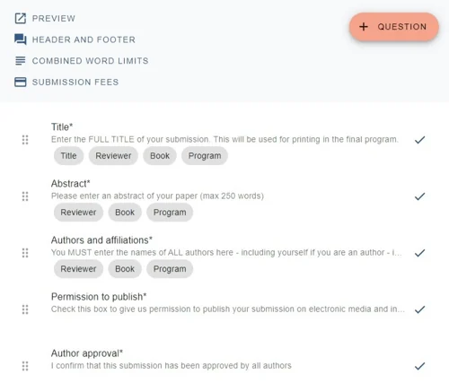
Clicking on Preview allows you to see the form as an end user.
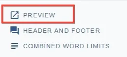
Click on theHeader and Footer message to open the fields for the header and footer.
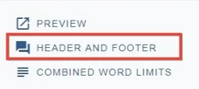
Edit to your requirements and click Back to Formwhen you are done. Changes are saved automatically.
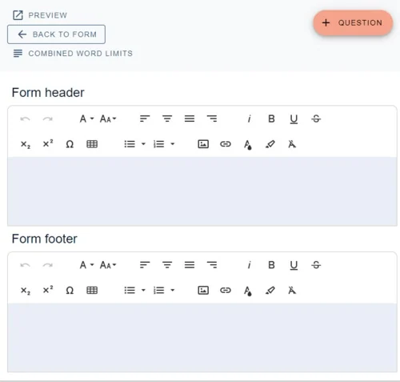
Instructions for setting Combined word limits arehere.
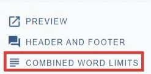
Submission fees and IEEE Copyright (below)
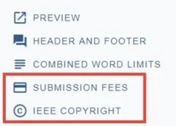
IEEE Copyright#
If you wish to enable this, click on the link, complete the fields, and click the Enable on submission page toggle.
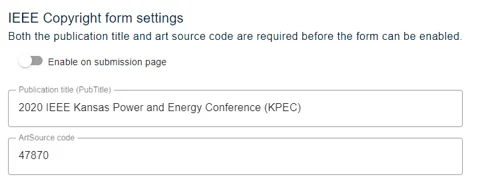
Adding tags for visibility
You will notice there are tags on some questions
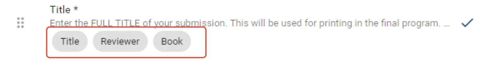
See Question tags for guidanceDisplay settings#
Towards the right hand side of each question, there is a Display settings label. Click on the icon to the right (in this case a tick) to adjust how the questions will be displayed to the end user.
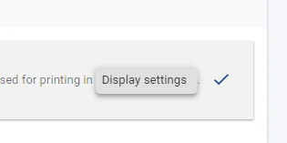
The standard options are below (there will be more if you have the Standard and Professional Conference Package) These options will also appear at the bottom of the each question, when you click to edit them.
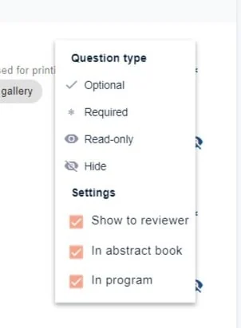
Optional - a response to the question is optional
Enabled - the question is visible and a response can be entered.
Required - the question is marked as mandatory - if no response, the submission will be marked as incomplete.
Read-only - the question is visible but a response cannot be entered, (typically used if a response has been given, and you don't want the user to be able to edit.)
Settings - see Question tags
NB: If you mark a question as Hide or Read-only as Required(*), the submissions will be marked as INCOMPLETE. To warn you of this you will see a red symbol next to the question, see below.
Editing the content of a question- (Note that all changes are automatically saved.)
Click on any question to open up the Edit questionscreen below. Different types of questions will have specific elements. Below is an example of a text editor question - the text editor types are only available in these questions. See Question types for more information.
1) Amend the title (Question name- this field is mandatory)
2) Set a word limit, (Word limit (optional))
3) Set a character limit (Character limit (optional))
4) Check this box if this question's response is the title of the submission. Note: this is used to pick up the title of the submission when emailing a submitter.
5) Choose the formatting you wish to make available (Text editor type)
6) Add a description (this will be the text of the question)
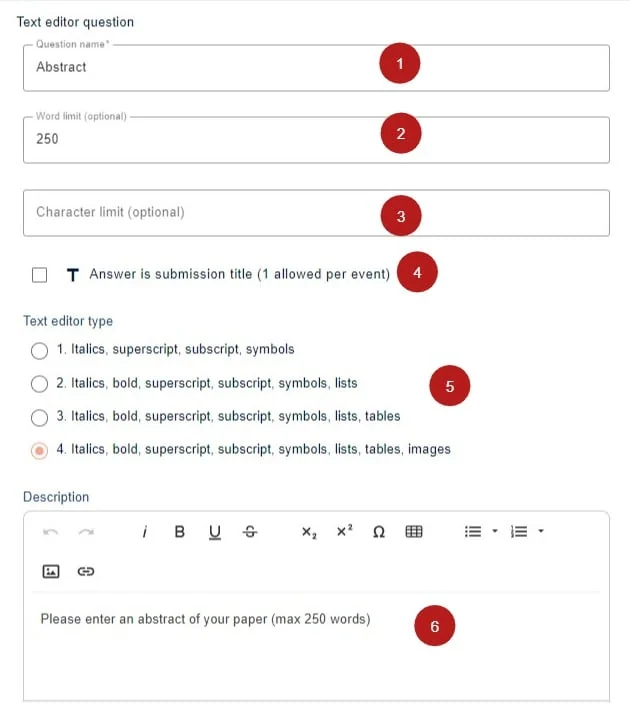
In the lower half, you can find the question display settings
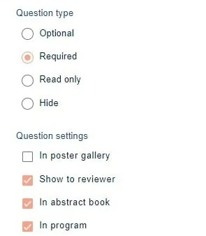
Deleting a question - click on the question you wish to delete.
Then click on Delete question. Click Back to form when you are done.
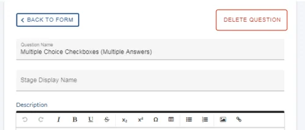
NB: Deleting questions in multi-stage events may have adverse consequences.
You have the option to restore it at a later date, along with any responses, should you require.
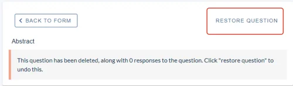
Adding a new question - To add a new question, click on the+Question button at the top of the submission form. See Question types
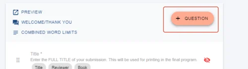
Changing the order of questions - You can drag and drop the questions up and down to change their order.
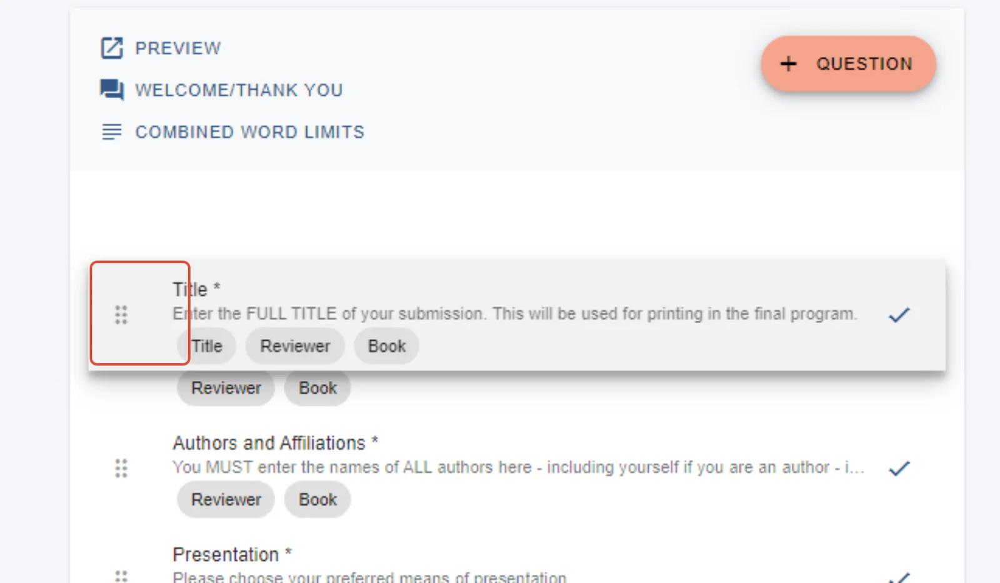

Didn't solve it? Ask our support team
No question is too small, and there's no charge for asking. Raise a ticket and someone who knows the software will pick it up.
Did this page solve it?
Thanks — this helps us fix it.